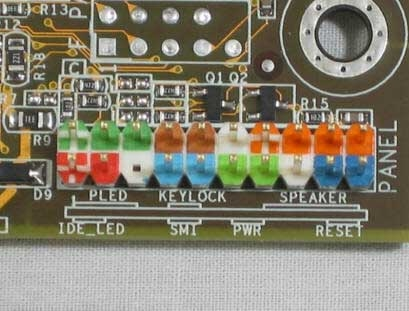
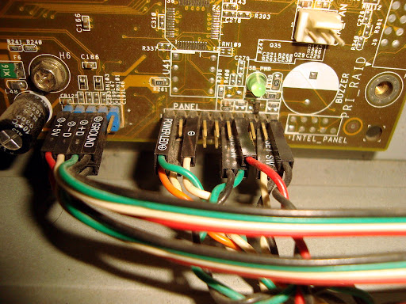

Panel frontal
Ejemplos:

Las cajas ATX, disponen en su panel frontal de varios botones y leds que deben de conectados a la placa base,
mediante unos cables que acaban en conectores de plastico negro y con un texto que permite identificar dichos
cables.
La funcion de estos conectores suelen ser:
Encendido y apagado del ordenador.
Reseteo del ordenador.
Led verde cuando el ordenador está encendido.
Led roja parpadeante cuando el disco duro está trabajando.
Conexionado de USB frontales.
Entrada auriculares y microfono.
